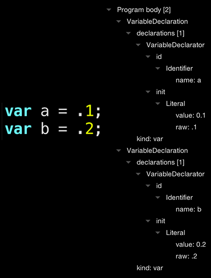

- s/w consultant for 15 years
- etc---
- So what was your first memory of JavaScript? Was it Obtrusive, Obnoxious JavaScript?
The Ramifications of JavaScript Everywhere
@smithrobs

- From 2000, site just went down in the last week
- Validations, img transitions, in-line script
http://www.microsoft.com/games/motocross2/tracks.htm
<a href="features.htm" onmouseout="di20('features','img/features.gif');"
onmouseover="di20('features','img/features_F2.gif');">
<img name="features" src="img/features.gif" width="166"
height="32" border="0"></a>
- Callback hell from continuation passing style (CPS, tail calls, trampolining, oh my)
- CommonJS Promises/A (https://gist.github.com/domenic/3889970)
- async/await style (Generators)
$.get('/first', function (data) { // there's some really great and important logic here $.get('/second', function (dataTwo) { // i'm sure there's good stuff here too dataTwo.forEach(function (n, i) { if (javascriptDestroyedTheWorld) return; $.get('/third', function (dataThree) { switch (dataThree) { case letsExplodeCyclomaticComplexity: $.get('/PLEASESTOP', function (argh) { alert('I did stuff: ' + argh); }); // moar! moar! moar! default: alert('i quit'); } }); }); }); });
weak typing
- JS != DOM
- Global Vars
- ASI
- Hoisting
- Scope
- IEEE Float
- with, eval, document.write
- typeof
- So much more!
type conversion
- + serves multiple meanings (infix add, infix string cat, prefix positivity) so you get string concat
- {} can be empty code block or empty object literal
- coercion to string happens first
- - is infix sub or prefix negativity
- .1+.2
- [1,2,3]+[4,5,6]
- []+{}
- {}+[]
- Array(16).join('wat' - 1) + " BATMAN!"
- Array(20).map(function(elem) { return 'a'; }); // diff between undefined and never assigned
- null == undefined
- National Science Foundation Network (NSFNET) was retired April 1995
- AOL, Prodigy started their reign of terror
The year was 1995.
hello, internet.
I'm going to a cold, dark place for finding an emulation of the blink tag in CSS3. But the blink tag was just a usability issue. Worse was to come.
We've committed worse sins to ourselves.
Now, wait. Let's back up a bit.
- WHAT ARE THIS INTERNETS? <BLINK>HELP<BLINK>
89-90: Berners-Lee proposes hypertext, HTML (img from wikipedia)
Simplification of Standard Generalized Markup Language (SGML)
which came from RUNOFF (computer text formatting) in bloody 1964
The year was 1989.
Or 1990.
24 years ago.
1964!
- SCHEME. 1975. Gerald Sussman on left, Dan P. Friedman on right.
- Dialect of lisp (actors)
- Sussman worked on Scheme with Guy Steele
- Friedman wrote Reasoned Schemer, is the reason we have lazy eval.
1975. Scheme (Lisp). Wizards? Magic?
(set! f (lambda (n) (+ n 100)))
(map f '(1 2 3))
===> (101 102 103)
- 1987 - SELF - Dialect of Smalltalk (influenced by Lisp)
- David Ungar/Randall Smith - Xerox/Sun. Lessons learned became Hotspot JVM.
- Showing pictures because I like pictures... and to remind you: We are standing on the shoulders of giants.
1987. Self (Smalltalk).
- 1995. Java. James Gosling. Bill Joy. Guy Steele. Gilad Bracha
- WORA WRITE ONCE RUN NOWHERE AMIRITE.
- So Java won. On the serverside. At least in 1995. Completely botched it on the client. Still botching it.
- (http://stackoverflow.com/questions/18883053/fading-one-image-out-while-another-in-using-css-transitions-on-opacity-isnt-smo)
- so I have one class I really like in Java. Might say it's my favorite class. Any guesses?
1995. Java. Gosling. DAT SYNTAX
- ’92 - objects were going to save the world. distrib objects were the future! CORBA, applets
- in ’95 - “A blue-collar language"
- Oracle owns and licenses the trademark of JavaScript
- my favorite java class
- http://www.quora.com/Java-programming-language/What-are-the-longest-Java-class-names-in-Java-API-or-famous-open-source-libraries
- Enterprise software is hard. Java is needlessly hard, callous, unforgiving, and cripcrap.
And the award goes to:
InternalFrameInternalFrameTitle PaneInternalFrameTitlePaneMaximize ButtonWindowNotFocusedState
(in package com/sun/java/swing/plaf/nimbus)
No.
Eich said, fine, okay have it your way.
Yes, it was there from the start. But bignums were not in the cards. JS had to "look like Java" only less so [more like C], be Java's dumb kid brother or boy-hostage sidekick. Plus, I had to be done in ten days or something worse than JS would have happened.
So double by default, int under the hood, and bitwise ops are 32-bit int (uint if you use >>>). I blame Java.
Mr. Brendan Eich

http://www.jwz.org/blog/2010/10/every-day-i-learn-something-new-and-stupid/#comment-1021
___Something like PHP only worse___
| Language | In dev (yrs) |
|---|---|
| Scheme | 5 |
| Self | 4 |
| Java | 4 |
| Smalltalk | 3? |
| Lisp | 2? |
| C# | 1.5 |
| JavaScript | 0.03 |
A hastily-developed language.
Constantly evolving technology.
Obsolete/draft standards.
We provide value to businesses with tools.
JSLint/JSHint/ESLint
Mocha/QUnit/test runners/etc
var assert = require("assert") describe('Array', function(){ describe('#indexOf()', function(){ it('should return -1 when the value is not present', function(){ assert.equal(-1, [1,2,3].indexOf(5)); assert.equal(-1, [1,2,3].indexOf(0)); }); }); });
Plato:
yo - scaffolding
grunt/gulp - build/task tool
bower - dep mgmt (can also use npm)
Scaffold/CI/CD/Dependency Mgmt
Needs 2013 update 2 RC
ZenCoding: div#id, input[type="text"]
- JSHint
- ZenCoding
- Bundle JS/CSS
- JS/CSS Intellisense
- .ts/.less/.coffee/.md
- Debugging!
- npm GUI!
- Profiling!
- Azure Deploy!
- assert runner!
- Alpha!
Talk a bit about RequireJS/AMD, and how Browserify can work with the web
CommonJS > AMD
http://unscriptable.com/code/AMD-vs-CommonJS/#0
IIFE (Loader.define)
(function(){ var secret = 'stuff'; return { getSecret: function () { return secret; } } })();
RequireJS/AMD (Angular DI)
require(["magnets"], function(magnets) { // do stuff with magnets });
CommonJS/Browserify
assignment: can't assign NaN
sec: can't walk stack
"use strict"; // gives us:
- NO global vars == YAY!
- NO with == YAY!
- 'sandboxed' eval
- safer assignment
- del weird things like prototype
- unique prop in {}, fn param names
- less arguments magic
- more secure
- NO octal
- 1994 - Netscape Enterprise Server
- Just a bit under 70,000 packages (was 48,000+)
- npm raised $2.6m seed investment
- Reinventing the wheel (somewhat)
- Is this the WORA?
- Why build a native app unless you need speed?
- Languages like Erlang suck up memory.
- IIS isn't the fastest web server.
- Apache is configuration hell.
- Abstractions. - DTrace, core dumps of JS
- Kids reimplementing 50-year-old ideas. Is this acceptable?
- It's running companies! (Paypal, azure, etc)

Hipsters or Revolutionaries?

Rule of least power - least powerful language suitable to task at hand
Assembly language of the web?
Hey remember ASM? Really? How bad it sucked?
Crockford said JS is VM of the web.
Atwood's Law.
"JS is the VM of the web"
- Crockford
'use strict'
Add types
Add classes (AHHHHH)
"function takes too much to type"
https://github.com/jashkenas/coffee-script/wiki/List-of-languages-that-compile-to-JS
200+ Compile-to-JS Languages

elm - quicksort, pattern match
Choose a pivot element to put in the "middle" of the sorted list
Gather all of the elements less than the pivot in `lower`
Gather all of the elements greater than the pivot in `higher`
Run `quicksort` on the `lower` and `higher` lists, sorting them
Put the sorted lists together
ClojureScript - http://clojure.org/protocols
Polymorphism via protocols
asm.js, pepper.js/emscripten
restricted subset of JavaScript
function add1(x) {
x = x|0; // x : int
return (x+1)|0;
}
Example: Code coverage with Istanbul
Mention sweet.js?
Source maps - Lump in a statement here
ESPRIMA & ASTs
Dart? Other VMs?
A million client-side MVCs
SPAs, Traditional apps obsolete?
"mini-standards"
- WebRTC
- WebSockets
- SSE
- Web Workers
- WebGL
- BONUS: Reactive
 http://xkcd.com/927/
http://xkcd.com/927/
Draft Rev 23 of ES6
Proxies
Max/Min Classes
Generators
Syntax
AND SO MUCH MORE!!11!one!
BONUS: Components, Shadow DOM
We killed applets, Flash, Silverlight... client-side apps next
"The cost of writing JavaScript is just too high"
- Don't focus on shiny objects...
- ...but keep your eyes open.
@markstarkman
Learn functional programming.
(and history. WARN: you may become caremad as we like to pretend 40-year-old concepts are new)(DAMN YOU VON NEUMANN)
JavaScript is here, and it's everywhere.